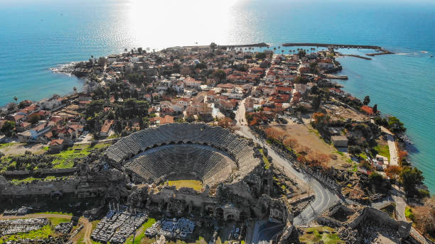
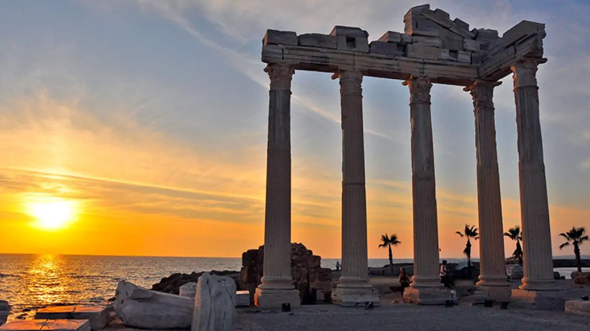
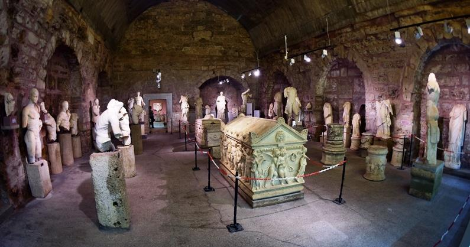
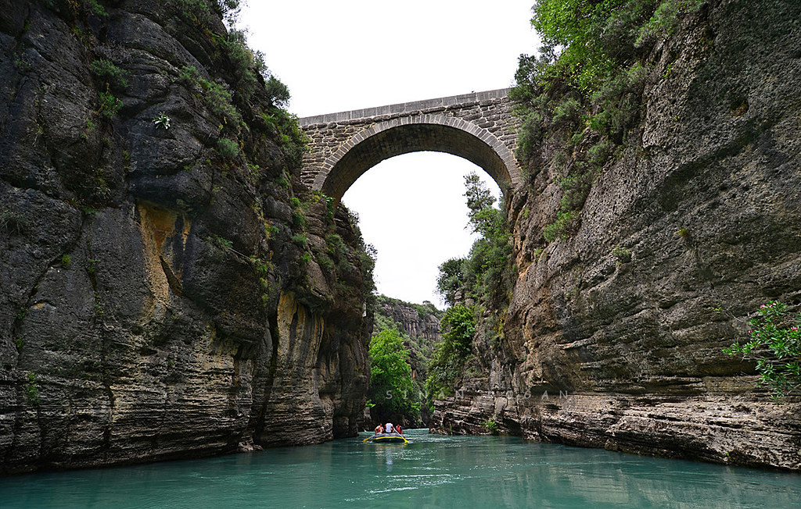
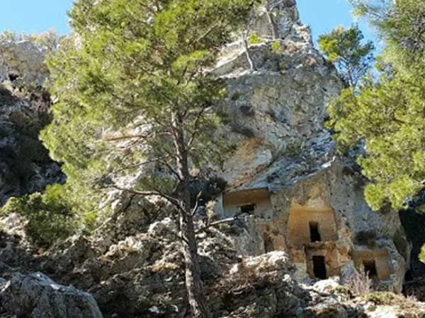
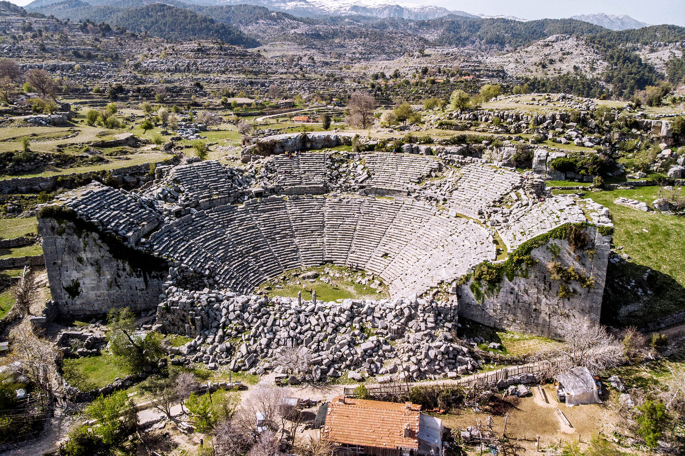
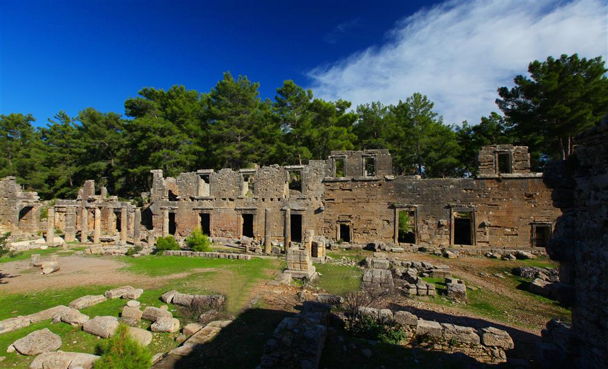
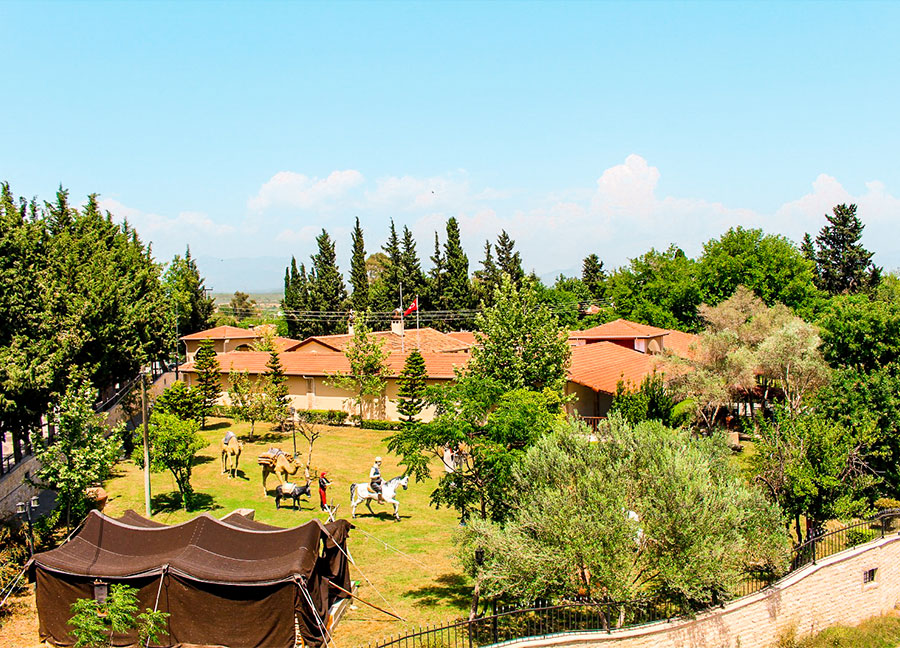
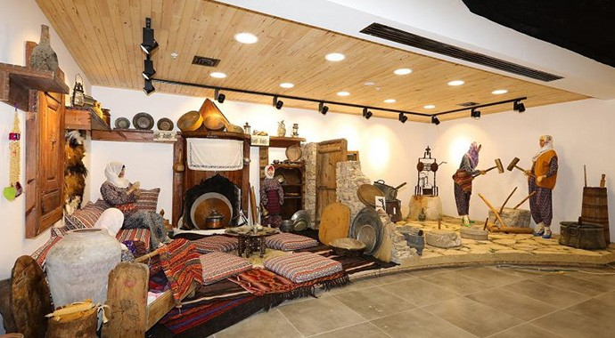

Side Antik Kenti
Side Antik Kenti, M.Ö. 7. yüzyıldan günümüze kadar uzanan tarihi kalıntılarıyla ünlüdür. Apollo Tapınağı, Antik Tiyatro, Agora ve Antik Liman gibi önemli yapılarla zenginleşen bu alan, hem tarihî hem de doğal güzellikleriyle büyüleyici bir ziyaret noktasıdır. Side, Akdeniz kıyısındaki şirin plajları ve sıcakkanlı atmosferiyle de dikkat çeker.

Apollon Tapınağı
Side Antik Kenti’nde bulunan Apollon Tapınağı, M.Ö. 2. yüzyılda inşa edilmiştir ve Apollon tanrısına adanmıştır. İyon tarzı sütunlarıyla dikkat çeken bu tapınak, antik dünyanın önemli dini yapılarından biri olup, muazzam büyüklüğü ve etkileyici mimarisiyle ziyaretçilerini büyüler. Tapınak, Akdeniz manzarasına hakim bir konumda yer alır ve bölgenin kültürel mirasının simgelerindendir.

Side Müzesi
Side Müzesi, Side Antik Kenti'nde, Roma hamamı binasında yer alır ve antik çağlardan kalan birçok eseri sergiler. Geç Bronz Çağı, Helenistik, Roma ve Bizans dönemlerine ait heykeller, lahitler, yazıtlar ve sikkeler gibi zengin bir koleksiyona sahiptir. Müze, Roma hamamının bölümlerinde düzenlenmiştir ve bu sayede ziyaretçilere dönemin mimarisi hakkında da bilgi verir.

Oluk Köprü
Oluk Köprü, Roma İmparatorluğu dönemi yapısı olup, M.Ö. 2. yüzyılda inşa edilmiştir ve Köprüçay Nehri üzerindedir. İon tarzı sütunlar ve kemerler ile tasarlanmış olan bu köprü, su taşkınlarını engellemek için yapılmış ve tarıma su taşıyan bir su yolu ağı parçasıdır. Günümüzde, hem tarihi hem de doğal güzellikleriyle bölgeye gelen turistler için önemli bir ziyaret noktasıdır.

Etenna Antik Kenti
Lykia ve Pamfilya bölgelerinin kesişiminde bulunan tarihi bir yerleşimdir. M.Ö. 3. yüzyıldan
M.S. 5. yüzyıla kadar aktif olan şehir, Roma dönemi mimarisine ait kalıntılarıyla dikkat çeker.

Selge Antik Kenti
Pisidia bölgesinde yer alan ve MÖ 4. yüzyılda kurulan tarihi bir yerleşimdir. Roma dönemi kalıntılarıyla dikkat çeker ve antik tiyatro, şehir surları, hamamlar gibi yapılarıyla zengin bir tarihî mirasa sahiptir. Yüksek konumu ve doğal güzellikleriyle öne çıkan Selge, hem doğa yürüyüşleri hem de tarihi keşifler yapmak isteyenler için önemli bir ziyaret noktasıdır.

Seleukeia - Lyrbe Antik Kenti
Seleukeia - Lyrbe Antik Kenti, MÖ 3. yüzyılda kurulan önemli bir antik yerleşimdir. Kent, Helenistik, Roma ve Bizans dönemlerine ait kalıntılarla doludur ve antik tiyatro, tapınaklar, hamamlar gibi yapılarıyla dikkat çeker. Şehir, yüksek bir tepeye yerleştirilmiş olup, hem tarihi kalıntılar hem de doğal güzellikler ile ziyaretçilere zengin bir deneyim sunar.

Yörük Müzesi
Manavgat Özel Yörük Müzesi, Yörük kültürünü tanıtmayı amaçlayan bir müzedir. Müze, yaklaşık 4.000 m²'lik bir alanda kurulmuş olup, 464 m²'lik kapalı sergi alanına sahiptir. 1.000'e yakın etnografik eserin sergilendiği müzede, Yörüklerin geleneksel yaşamı çeşitli temalarla ziyaretçilere sunulmaktadır.

Kent Müzesi
Manavgat Kent Müzesi, 2018 yılında hizmete açılmış modern bir kültür müzesidir.
Müze, Yörük ve Girit kültürü, tarım, zanaat, yemek kültürü ve doğal yaşam gibi temaları işleyen
14 farklı bölümden oluşur. İçeriğinde Yörük çadırı, dokuma tezgâhları, yemek sunumları,
tarım aletleri, Toroslar’a ait doğa canlandırmaları ve görsel arşivler bulunur. Projeksiyon alanları,
kütüphane ve kent kafesi gibi sosyal alanlarla ziyaretçilere zengin bir kültürel deneyim sunar.